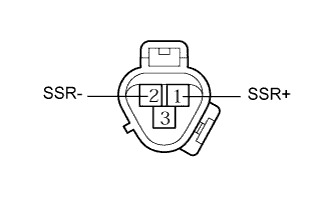

DTC B1422 Цепь датчика блокировки компрессора |
| Код DTC | Условие обнаружения DTC | Неисправный участок |
| B1422 | Обрыв или короткое замыкание в цепи датчика блокировки компрессора. |
|
| 1.ПРОВЕРЬТЕ СИСТЕМУ ПЕРЕДАЧИ ДАННЫХ CAN |
Проверьте работоспособность мультиплексной шины CAN с помощью портативного диагностического прибора.
| Результат | Следующий шаг |
| DTC для CAN не выводится | А |
| Выводится код DTC системы передачи данных CAN (для моделей с левосторонним рулевым управлением, с системой посадки и запуска) | B |
| Выводится код DTC системы передачи данных CAN (для моделей с левосторонним рулевым управлением, без системы посадки и запуска) | C |
| Выводится код DTC системы передачи данных CAN (для моделей с правосторонним рулевым управлением, с системой посадки и запуска) | D |
| Выводится код DTC системы передачи данных CAN (для моделей с правосторонним рулевым управлением, без системы посадки и запуска) | E |
|
| ||||
|
| ||||
|
| ||||
|
| ||||
| А | |
| 2.ПРОВЕРЬТЕ КОМПРЕССОР СИСТЕМЫ КОНДИЦИОНИРОВАНИЯ В СБОРЕ (ДАТЧИК БЛОКИРОВКИ СИСТЕМЫ КОНДИЦИОНИРОВАНИЯ) |
|  |
Для моделей с 1GR-FE:
Снимите компрессор системы кондиционирования (датчик блокировки системы кондиционирования) (Нажмите здесь).
Для моделей с 1KD-FTV:
Снимите компрессор системы кондиционирования (датчик блокировки системы кондиционирования) (Нажмите здесь).
Для моделей с 2TR-FE:
Снимите компрессор системы кондиционирования (датчик блокировки системы кондиционирования) (Нажмите здесь).
Измерьте сопротивление в соответствии со значениями, приведенными в таблице ниже.
| Контакты для подключения диагностического прибора | Условие | Заданные условия |
| 1 (SSR+) - 2 (SSR-) | 20°C (68°F) | 160 - 320 Ом |
| Результат | Следующий шаг |
| OK | А |
| NG (для 1GR-FE) | B |
| NG (для моделей с 1KD-FTV) | C |
| NG (для моделей с 2TR-FE) | D |
|
| ||||
|
| ||||
|
| ||||
| А | |
| 3.ПРОВЕРЬТЕ ЖГУТ ПРОВОДОВ И РАЗЪЕМ (БЛОК УПРАВЛЕНИЯ СИСТЕМОЙ КОНДИЦИОНИРОВАНИЯ – ДАТЧИК БЛОКИРОВКИ СИСТЕМЫ КОНДИЦИОНИРОВАНИЯ) |
Отсоедините разъем G25 блока управления.
Отсоедините разъем C39 датчика.
Измерьте сопротивление в соответствии со значениями, приведенными в таблице ниже.
| Контакты для подключения диагностического прибора | Режим | Заданные условия |
| G25-8 (LOCK) - C39-1 (SSR+) | Всегда | Менее 1 Ом |
| G25-13 (SG-2) - C39-2 (SSR-) | Всегда | Менее 1 Ом |
| G25-8 (LOCK) - масса | Всегда | 10 кОм или более |
| G25-13 (SG-2) - масса | Всегда | 10 кОм или более |
| Результат | Следующий шаг |
| ОК (при поиске неисправностей по таблице признаков неисправностей) | А |
| ОК (при поиске неисправностей по DTC) | B |
| NG | C |
|
| ||||
|
| ||||
| А | ||
| ||